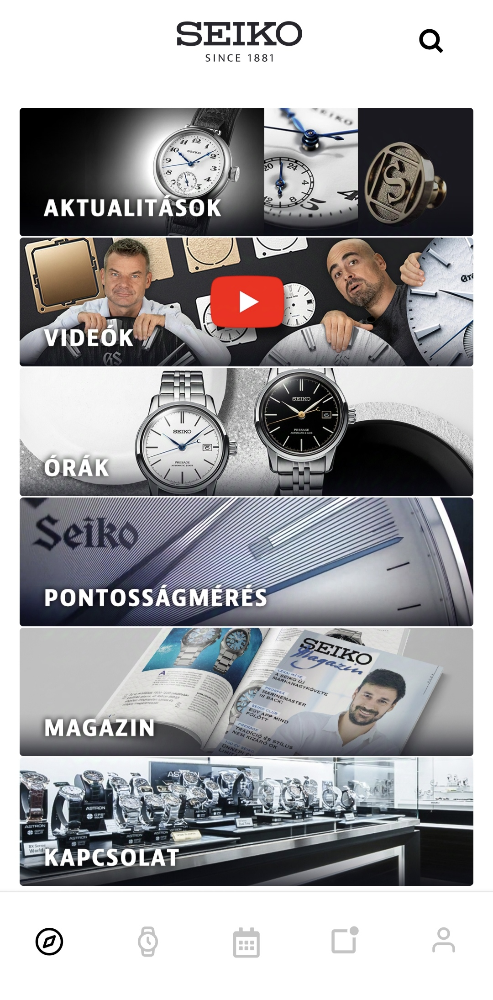

Alkalmazás
A Seiko Club applikáció egy digitális élményt ad a Seiko kedvelőknek. A Seiko, mint márka, híres a precizitásáról és innovációiról, és az applikáció célja, hogy egy olyan közösséget hozzon létre, amely lehetőséget ad a felhasználóknak, hogy közelebbről megismerkedjenek a márka történetével, termékeivel és a legújabb fejlesztéseivel.
Funkciók és jellemzők:
Exkluzív Hírek és Frissítések:
A Seiko Club applikáció lehetőséget ad arra, hogy a felhasználók elsőként értesüljenek a legújabb Seiko termékekről, limitált kiadású órákról és eseményekről. A rendszeres frissítések segítségével a felhasználók mindig naprakészen követhetik a márka újdonságait.
Seiko Termékek és Hírek:
A felhasználók felfedezhetik a Seiko legújabb modelljeit, és részletes információkat kapnak a különböző termékekről, mint például az új technológiai újítások, limitált kiadások és az órák története.
Interaktív Élmény:
A Seiko Club applikáció lehetőséget ad arra, hogy a felhasználók részt vegyenek interaktív kihívásokban és nyereményjátékokban, amelyek különleges Seiko ajándékokat kínálnak.
Hűségprogram:
Az applikáció egyik kiemelt jellemzője a hűségprogram, amelyben a tagok különböző
előnyökhöz juthatnak, mint például korai hozzáférés a limitált kiadásokhoz vagy egyedi
ajánlatokhoz.
Történelem és Kulturális Képzés:
Az alkalmazás nemcsak a termékeket mutatja be, hanem segít megismerkedni a Seiko
történetével, a márka hagyományainak és értékeinek mélyebb megértésével, valamint
betekintést nyújt az óragyártás művészetébe és tudományába.